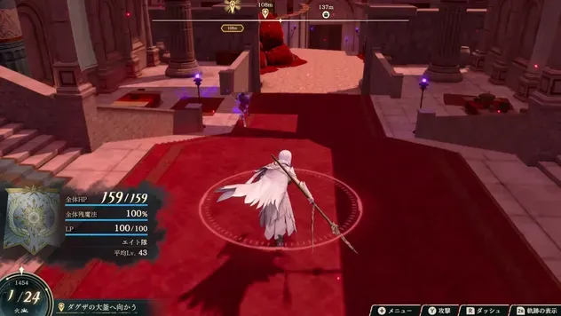

这是便于搜索与分享的静态版本，内容与交互版同步生成。打开交互版 →
← 全部篇章
PART III · SALVATION
救世篇
重聚同伴，重建失落的大地。
救世主再度踏上鞑古席翁。四条旅途中结下的缘分，将陆续回到队伍；从一队人的战斗，到多支部队的防卫、复兴与远征。
进入本篇准备 ↓
A NEW CAMPAIGN
先重聚，再分队
第一区分的援军登场，不等于已经完成永久入队。进入第二区分的自由行动后，逐个与符合条件的同伴交谈，再安排培养和神殿复兴。后续多队行动时，给每队留回复与处理不同敌人的手段。
下方战斗与剧情细节保持折叠，需要时再按区分阅读。
BATTLE NOTES
按区分推进
含后期机制与条件加入信息。展开对应区分查看；不需要的内容可以保持折叠。
01第 1 区分解放战与条件助战
集中破障，处理首领的剩余 HP。
本场优先带什么人
救世主与实际到场的助战角色，留补刀与治疗。
推进顺序
- 从南侧接敌，避免过度深入而远离后续助战。
- 障壁解除后集中输出；目标可能以 1 HP 存活，预留可靠补刀。
别漏掉
完成相应第一部路线／外传才有对应助战。这里的助战不等于四名主角已全部永久加入。
GameWith · 救世篇第 1 区分 ↗攻略来源交叉参考 · 未作游戏内实测
02第 2 区分重建与自由行动恢复
重新集结队伍，清理瘴气后推进冥界之门。
本场优先带什么人
弓系反飞行、治疗、救世主清理战场瘴气。
推进顺序
- 到据点与满足条件的角色交谈入队；仅使用已经解锁的同伴。
- 复兴神殿并完成相关委托，可解锁新的最上级兵种；根据主力目标选择先后。
- 世界地图清理对应地区瘴气，注意多层节点需要多次行动。
别漏掉
第一部未完成的路线、外传或招募，不会因为进入第三部自动全部补齐。
GameWith · 救世篇第 2 区分 ↗攻略来源交叉参考 · 未作游戏内实测
03第 3 区分暴食瘴气
保住装备使用次数，集中处理目标首领。
本场优先带什么人
弓手对飞行敌人，救世主清路，主力负责多个 HP 储备。
推进顺序
- 避免在暴食瘴气上待机，以免下一回合损失武器耐久和魔法次数。
- 优先清出安全通道，再围绕首领组织攻击。
别漏掉
这类地形不能只看当回合 HP 损失；战前检查备用武器与治疗次数。
GameWith · 救世篇第 3 区分 ↗攻略来源交叉参考 · 未作游戏内实测
04第 4 区分视野限制与双线应对
先确认视野和目标，再分配队伍。
本场优先带什么人
探路者、反治疗输出、每队独立治疗。
推进顺序
- 欺瞒瘴气限制视野，利用清除能力或对应加护改善视野后推进。
- 傲慢瘴气会影响命中；以战斗预览为准，优先处理会治疗敌人的单位。
别漏掉
不要让一支队伍拿走全部治疗资源；未探明区域不要靠回避概率冒进。
GameWith · 救世篇第 4 区分 ↗攻略来源交叉参考 · 未作游戏内实测
05第 5 区分多门推进与不同瘴气
按每场部署上限组织队伍，保住条件助战。
本场优先带什么人
沙漠关优先适合地形的步行／飞行单位；分路时双方都带回复。
推进顺序
- 嫉妒瘴气可用对应「海賊王の財宝」应对，装备持有者按需要站前排。
- 愤怒瘴气会放大必杀并降低防御，不能只计算自己增加的伤害。
- 情欲瘴气会移动且影响命中／回避，每回合重看落点；保护助战クラプカ以满足下一阶段加入条件。
别漏掉
部分战斗需要提前集结多支部队；不要等期限到来才开始长距离调兵。
GameWith · 救世篇第 5 区分 ↗攻略来源交叉参考 · 未作游戏内实测
06第 6 区分终盘整备与封印门
进入最终区域前完成补给，战斗中先处理障壁相关机制。
本场优先带什么人
分队处理门，每队带治疗；主力在机制解除后集中输出。
推进顺序
- 进入バロール神殿后不能返回城市，先完成想做的任务、装备和回复准备。
- 面对ライラー先处理障壁与危险瘴气，避免无意义拖长战斗。
- 最终战分配队伍处理门、削弱防护，躲开预告的大范围攻击再集中打首领。
别漏掉
可用角色取决于此前通关与加入记录；不能默认凯伊、迪托利希等所有人都已培养完成。
GameWith · 救世篇第 6 区分 ↗攻略来源交叉参考 · 未作游戏内实测